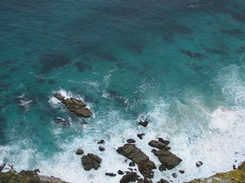
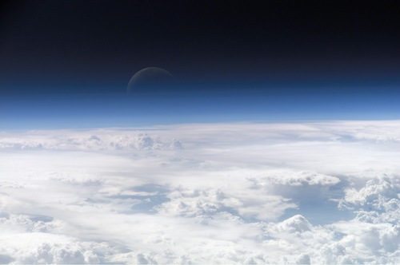
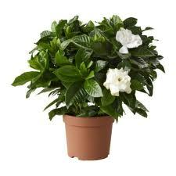

In Grade 7 the learners investigated the relationship between the Earth and the Sun, day and night, the seasons and how the Sun's energy is utilized by plants, and how fossil fuels are formed. In Grade 8 they looked at the Earth as part of a bigger system, namely the solar system. This year they will study the Earth as a system itself and the different parts that make up this system. 'Systems' is an important theme that runs through all of science and here we learn about systems in yet another application.
In the first chapter the parts of the Earth's system (the spheres) and how the parts work together are examined. The hydrosphere and water cycle were studied in earlier grades and revised here. The biosphere is also studied throughout Natural Sciences. The remaining two spheres are investigated this year - the lithosphere (Chapter 2 and 3) and the atmosphere (Chapter 4). In the lithosphere we look at how rocks are formed, the minerals found in rocks, how we extract these minerals and the impact our interactions with the lithosphere has on the other spheres. The layers of the atmosphere are studied in the last chapter.
The study of the lithosphere and atmosphere links up with what learners have learned about the atom and compounds in the Energy and Change section, as well as phases of matter and knowledge about gases, like oxygen, carbon dioxide and methane.
This will prepare learners for study in Grade 10 and further, where the different branches of Natural Sciences separate into Life Sciences (Biology and Environmental Sciences), Physical Sciences (Chemistry and Physics) and Earth Sciences (Geography).
Concept maps: The concept maps in these workbooks were created at Siyavula using an open source programme called CMapTools. You can download the programme from this link if you would like to use it to create your own concept maps.[link]http://cmap.ihmc.us/download/
Citizen science offers you a free, easily accessible and inspiring opportunity to bring real science into the classroom. Find out more about incorporating real science into your classroom with Zooniverse citizen science projects at ZooTeach:[link]http://www.zooteach.org/. ZooTeach is a website where teachers and educators can share high quality lesson plans and resources that complement the Zooniverse citizen science projects.
1.1 Spheres of the Earth (3 hours)
Tasks
Skills
Recommendation
Activity: Exploring the spheres of the Earth
Observation, data collection, writing
CAPS suggested
Activity: Interaction between the spheres
Application
CAPS suggested
Activity: Identifying the interactions of the spheres on Earth
Interpreting information, analysis
CAPS suggested
Activity: Upsetting the balance
Analysis, Application, Prediction
Suggested
What are the different parts of the Earth?
How do these parts interact?
Why can we refer to the Earth as a system?
In Grade 7 you learned about the relationship between the Earth and the Sun and the importance of the Sun for life on Earth. In Grade 8 you looked at the relationship between the Earth and other planets in our solar system. This year we will look at the Earth as a system and all the parts of this system.
Spheres of the Earth
biosphere
hydrosphere
lithosphere
atmosphere
You have learned about systems and cycles throughout your studies of Natural Sciences over the past 5 years. For example, you have learned about the life cycle of a butterfly, energy systems in food webs or electric circuits, and the solar system. Much of what we observe in nature is part of one or many systems or cycles. In this chapter we are going to learn about the Earth as a closed system and the four different parts (spheres) of this system.
The story of our planet.
Earth's four spheres
The names of the four spheres are derived from the Greek words for stone (litho), air (atmo), water (hydro), and life (bio).
The word 'sphere' is used in Mathematics to describe a round shape. The Earth has the shape of a sphere. When we talk about the four spheres of the Earth, we do not mean a ball shape, but rather we refer to the touching and overlapping layers within Earth.
The Earth is made up of four systems, or spheres. The biosphere (life), the lithosphere (land), the hydrosphere (water) and the atmosphere (air). On Earth land, water, air and life interact with one another. As humans, we are also part of this interaction. There is a fine balance between these four systems - if the one becomes altered, it has an effect on all the others.
The Biosphere
The biosphere includes all life on Earth - plants, animals and humans. Most of what is studied in Life and Living is about the biosphere. The biosphere also includes life in the oceans, and under the soil. For example bacteria living on decaying plant material and the smallest sea creatures and plants are part of the biosphere. Almost all the life on the planet is found between 3 meters below the surface of the Earth, up to 30 meters above the ground, and in the top 200 meters of the oceans.
Biosphere 2 is a man-made research centre in America, in the Arizona Desert, where scientists have built a large enclosed artificial biosphere.
Scientists built a self-contained facility called Biosphere 2, to study the interactions between living things and the environment.
An interesting study was done by a research team in Arizona, USA, where they built a self-contained facility called Biosphere 2 to study the relationship between living things and their environment. The facility had absolutely no contact with anything on Earth, except the Sun. The first group of people lived inside, without exiting, for 2 years. The project wasn't as successful as they planned and they realised that we do not know enough about the interactions between the systems on Earth. The project is still ongoing and used for extensive research. More information is available here ( http://b2science.org/). This can be given as an extension reading for your learners.
All living things and their habitats form part of the biosphere. The following photographs provide examples of different organisms in their habitats, living in the biosphere.
A grasshopperDolphins in the sea.Escherichia coli bacteria.Sugar cane fields.An earthworm in the soil.Limpets in a rock pool.Moss in a forest.Phytoplankton in the sea.A blue crane on the river's edge.Mushrooms in a field.Children at school.
Something interesting - the biggest organism on Earth.
The first person to use the term 'biosphere' was the geologist Eduard Suess in 1875 when he wrote a definition for the biosphere as 'the place on Earth's surface where life dwells.'
The hydrosphere
The hydrosphere includes all water on the planet - the oceans, lakes, rivers, groundwater, rain, clouds, glaciers and ice caps. About 70% of the surface of the Earth is covered with water. The oceans contain most of this water, with only a small portion of it being fresh water. All the water on Earth forms part of the hydrosphere.
The total mass of the hydrosphere is approximately 1,4 × 1018 tonnes! The volume of one tonne of water is approximately 1 cubic meter (this is about 900 A4 textbooks).
An iceberg.A river.Clouds.The sea.
Which came first - the rain or the rain forest?
Blue planet - a look at water on our planet.
The atmosphere
The atmosphere includes all the air above the surface of the Earth all the way to space. All the gases that are present in the air are included in the atmosphere. Most of the atmosphere is found close to the surface of the Earth where the air is most dense. The air contains 79% nitrogen, less than 21% oxygen, and a small amount of carbon dioxide and other gases. We will look more closely at the atmosphere later on in this chapter.
The top of Earth's atmosphere.The region of space occupied by Earth's atmosphere.
The lithosphere
The lithosphere includes the Earth's crust and the upper part of the mantle. All mountains, rocks, soil and minerals included in the Earth's crust are part of the lithosphere. Even the seafloor is part of the lithosphere, because it is also made up of sediments of sand and rock. We will look more closely at the lithosphere in the next section.
All the rocks, soil and sand on Earth form part of the lithosphere, as shown in the following photographs.
Rock formations.Sand dunes.Soil.Mountains.Minerals.Seafloor.
The following collage shows the four spheres of the Earth.
It summarises what was covered so far in this chapter. If you have facilities, this can be played to the class at the end of the lesson. If not, the content is covered in the text in this section.
Exploring the spheres of the Earth
INSTRUCTIONS:
Find an example on your school ground or at home where all four spheres are present. For example a tree growing in your garden.
Describe the location and what you have included in your example.
Identify each of the spheres in a short paragraph.
Your teacher might also ask you to present your example as a poster with illustrations and short descriptions, identifying each sphere.
This activity is only about identifying the different spheres. The next section will look at the interactions of the spheres. You can use the examples which the learners have chosen to build the next lesson upon.
Learner-dependent answer. The learners needs to be able to identify the various spheres within the example they have chosen, for example: A plant in a pot.

The soil/sand is part of the lithosphere. The soil contains water, which is part of the hydrosphere, the plant is part of the biosphere and the air around the plant is part of the atmosphere. The plant takes in carbon dioxide and gives off oxygen when photosynthesis takes place, and the reverse during respiration. Oxygen and carbon dioxide are part of the atmosphere.
Alternative options are: A tree growing on the school grounds, a frog in a pond, etc.
Instead of being a written task, you can also ask learners to do a small poster with a drawing of their example, with annotations describing the different sphere.
This section can be covered by doing the activity and giving learners the opportunity to discover the interaction between the different spheres. The activity also links up with the previous activity where they explored the different spheres.
The different spheres of the Earth are closely linked and interact with each other. Let's investigate this in the following activity.
Interaction between the spheres
INSTRUCTIONS:
Study the photo of thorn trees on the savannah.
Answer the questions that follow.
Thorn trees.
QUESTIONS:
Identify the four different spheres of the Earth in the example.
Biosphere - the tree, grasses and other plants
Lithosphere - the sand, rocks and minerals in the soil
Hydrosphere - the groundwater (or water in the soil)
Atmosphere - the air around the tree
What will happen if the trees do not get enough water?
They will wither and die. They need water to photosynthesise.
Describe the interaction between the hydrosphere and the biosphere in this example.
The trees and other plants (biosphere) interact with the hydrosphere when they absorb water through their roots.
What will happen if the carbon dioxide levels change dramatically?
The plants will not flourish, their growth will be affected as photosynthesis will be affected. Depending on how dramatically levels change, the plants might die.
Describe the interaction between the atmosphere and the biosphere in this example.
The carbon dioxide in the atmosphere is needed by the plants for photosynthesis. The plants also produce oxygen, which is given off into the atmosphere.
Is there any interaction between the lithosphere and the hydrosphere in this example?
Yes, the minerals (lithosphere) in the soil are dissolved in the groundwater (hydrosphere). The groundwater (hydrosphere) also wets the soil (lithosphere) so that the roots of the plants can absorb it.
Use the example you have chosen in the previous activity (Exploring the spheres of the Earth) and describe three different interactions between the different spheres.
Learner-dependent answer. Any three combinations can be described. For example:
1. The pot plant (biosphere) absorbs water (hydrosphere) through its roots and uses it for photosynthesis.
2. The plant (biosphere) uses carbon dioxide (atmosphere) and gives off oxygen (atmosphere) during photosynthesis.
3. The plant (biosphere) uses the soil, sand and rocks (lithosphere) to anchor itself.
4. The minerals (lithosphere) dissolve in the groundwater (hydrosphere) so that the plant (biosphere) can absorb it.
The easiest interactions to describe are those between the biosphere and the other spheres respectively. In the next activity the idea is to explore the interaction between the other spheres as well.
There is an interaction between the tree and other plants (biosphere) and the air (atmosphere) as they use carbon dioxide from the air during photosynthesis and give off oxygen. There is an interaction between the plants (biosphere) and the soil (lithosphere) when they absorb water (hydrosphere) and minerals (lithosphere) from the soil (lithosphere). The soil is also used to anchor the plants. The tree (biosphere) produces flowers and then fruit. Animals eat the fruit and the leaves of the trees and other plants.
Identifying the interactions of the spheres on Earth
For this activity let the learners discuss amongst themselves first. The activity can be part of your teaching. The idea is that the learners discover the interactions by themselves (with your guidance) before you 'give them the answers'. Give them 5 minutes to talk to each other and then another 10 minutes so that they can complete the map. Afterwards the interactions can be discussed as a class. They might need some assistance in how to complete the map. One example is given. It might be necessary to do one more example as a class before they try it on their own.
INSTRUCTIONS:
The picture below is of the dam wall that was built for the Gariep Dam on the border between the Free State and the Eastern Cape. The wall is used to generate hydroelectric power, as we learned about in Energy and Change.
Answer the questions below.
Gariep Dam in the Orange River.
QUESTIONS:
Discuss in pairs all the possible interactions between the spheres of the Earth.
Work on your own to complete the following map. Write a description of the interaction on each of the arrows. One example was done for you: There is an interaction between the lithosphere and the atmosphere in that the wind (moving air) will cause erosion of the rocks surrounding the dam. Where possible include more than one interaction on the arrow linking the spheres.
Learner-dependent answer. Some possible solutions are given below. Learners could also include other options.
The pictures below show how crops are harvested. The process of growing and harvesting crops are good examples of how the different spheres of the Earth interact. The hydrosphere provides water for the crops to grow. The soil provides minerals for the crops to give a good yield. The air provides carbon dioxide to the crops for photosynthesis and in return the plants give off oxygen to the air. The people (biosphere) make use of the materials from the lithosphere to build machinery or make sharp tools (metal from the lithosphere) for cutting wheat for example. Many interactions play a role in ensuring a healthy crop.
Growing wheat in fields.A harvester cutting and gathering the wheat.
Upsetting the balance
Let's look at our example of the thorn trees in a savannah ecosystem again. If the balance in any part of the system is changed, it affects the whole system. For example, if there is not enough water, the tree won't flourish and produce fruit (in this case, seed pods). If the air is polluted, it affects the availability of carbon dioxide to the tree. If there are not sufficient minerals in the soil, the plants cannot grow.
Think back to the definition of a system which we discussed in Energy and Change. A system is a set of parts working together where a change in one part affects other parts. This also applies when talking about the Earth as a whole system.
Upsetting the balance
This activity will require the learners to think and apply what they have learned in the section so far as well as knowledge from previous chapters. You could use the activity to guide a classroom discussion, or let the learners work in pairs or small groups. The important message for this section is that a disturbance in one of the spheres has an effect on all the others. The disturbance can be due to natural causes, or due to the influence of human interactions. As humans we have a responsibility to understand how the interactions work, what impact humans have on the planet, and what we need to do today to make life possible for future generations.
Interactions between the spheres of Earth.
QUESTIONS:
Identify the four spheres of the Earth from the photograph.
Biosphere - plants
Hydrosphere - river and snow
Lithosphere - rocks, soil, mountains
Atmosphere - air
Predict what the influence of the following scenarios on each sphere would be:
Large deposits of coal are found here.
.
The average temperature rises considerably as a result of global warming.
Learners could suggest that the ecosystem would be destroyed as the earth would be mined, plants and animals would lose their habitat, the water could be polluted from the mining, as well as the atmosphere from exhaust gases from vehicles and machinery.
Global climate change would follow, for example, the snow would melt, the river might dry up, the plants and animals would suffer from an increase in average temperature.
What is our responsibility as humans in the two scenarios in the previous question?
Learner-dependent answer. Learners must discuss this and write down some of their thoughts. Some points to raise include being environmentally aware of our impact, assessing our impact before embarking on a project such as a new mine, looking for alternative solutions, such as renewable energy sources.
As you have seen in the activity, all the spheres on Earth interact closely with each other. When there is a change in one of the spheres, the others are also affected. The changes can be due to natural causes, for example floods or earthquakes, but more often these changes are due to human influence. As human we have a responsibility to understand the interactions on Earth and to look after the planet so that future generations will be able to live on Earth.
The concept maps in your workbooks were created at Siyavula using an open source programme. You can download it from this link if you want to use it to create your own concept maps for your other subjects and for next year.http://cmap.ihmc.us/download/
The Earth is a complex system where all the parts (spheres) interact.
The Earth consists of four spheres: the lithosphere, the hydrosphere, the atmosphere and the biosphere.
The lithosphere consists of solid rock, soil and minerals.
The hydrosphere consists of water in all its forms.
The atmosphere is the layer of gases around the Earth.
The biosphere consists of all living plants and animals and their interactions with the rocks, soil, air and water in their habitats.
Concept map
Use the following page to draw your own concept map for this chapter.
Revision questions
Identify the four spheres of the Earth. What is each sphere composed of? List only three components for each. [8 marks]
The lithosphere consists of solid rock: mountains, sand and minerals.
The hydrosphere consists of water in all its forms: ice, snow, lakes, dams, rivers and the ocean.
The atmosphere is a layer of gases around the Earth, for example carbon dioxide, oxygen and nitrogen.
The biosphere consists of all living plants and animals and their interactions with the rocks, soil, air and water: all plants and animals on land, underground and in water - plants, animals, and humans are part of the biosphere.
How does the lithosphere interact with the hydrosphere, biosphere and atmosphere in the photographs below? [6 marks]
A large open copper mine.
A sand dune in the Namib Desert
The copper (mineral, lithosphere) in this area is extracted by humans (biosphere) through mining activity.
Mining activities need a lot of water (hydrosphere).
A lot of dust is created during mining activities polluting the air (atmosphere). Additional carbon dioxide is also formed due to the mine trucks driving in and out of the mine daily. Mines use a lot of energy to drive the machinery and electricity generation has negative effects on the environment.
The shape of the landscape (lithosphere) was changed due to the actions of humans (biosphere).
The sand (lithosphere) is blown by the wind (moving air, atmosphere) to form sand dunes.
Very little water (hydrosphere) is available in desert areas. On occasion it will rain (hydrosphere), or there might be underground water (hydrosphere) sources which plants (trees at the foothills of the dune, biosphere) will use. Some desert animals like insects or snakes (biosphere) may be found under the sand (lithosphere) which provides them with protection from the heat of the Sun.
You have a wet towel which you hang outside to dry. Describe and compare the interaction between the hydrosphere (water droplets on your towel) and the atmosphere (temperature and air movement around you), if you live in a dry area, and if you live in a humid area. [2 marks]
In a dry area, evaporation of water droplets (hydrosphere) take place fast because the air (lithosphere) is quite dry and the air temperature is high. Alternatively, in a humid area, evaporation will not take place as fast.